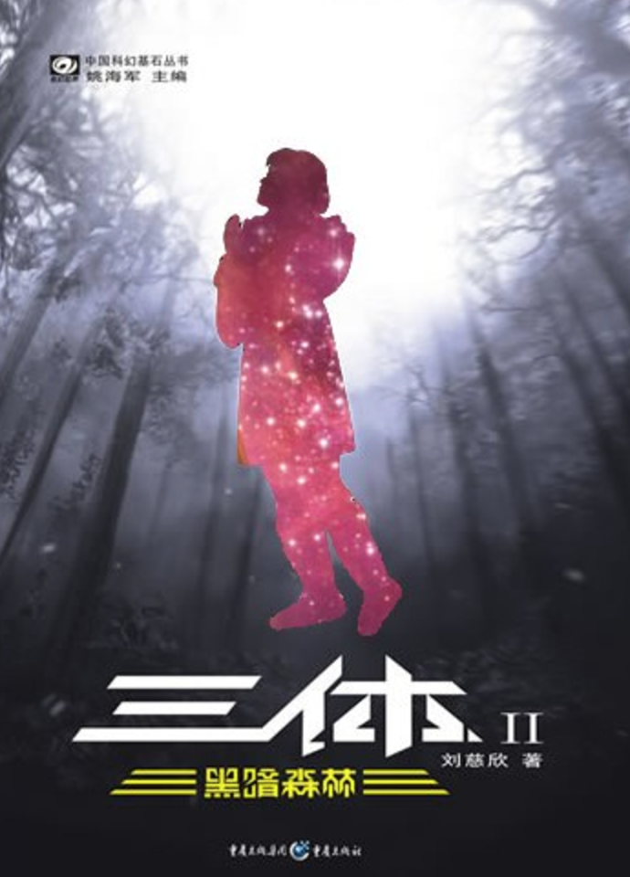

三体 Three Body
《三体》是中国科幻作家刘慈欣的代表作，被誉为中国科幻文学的里程碑之一，也是现代科幻小说的经典之作。全书分为三部曲：《三体》、《三体Ⅱ：黑暗森林》和《三体Ⅲ：死神永生》。这部作品通过对宇宙、文明和人性的深刻描写，引发了全球范围内的关注，并获得了国际权威奖项雨果奖。
故事讲述了地球文明在面对来自三体文明的生存威胁时，所经历的艰难抉择和斗争。三体文明所在的恒星系由于三颗恒星的复杂运动规律，导致其文明不断毁灭和重建。为了寻找新的生存空间，三体文明将目光投向了地球。

黑暗森林 The Dark Forest
《三体Ⅱ：黑暗森林》是中国科幻作家刘慈欣的代表作《三体》三部曲的第二部。该部小说承接第一部《三体》的故事，进一步展开了三体文明与地球文明之间的互动，提出了著名的“黑暗森林法则”，并深入探讨了宇宙文明的生存逻辑与人类应对外星威胁的策略。
本书讲述了三体文明舰队入侵在即，人类通过“面壁计划”秘密策划抵抗方案。主人公罗辑提出“黑暗森林法则”，揭示宇宙中文明因资源有限而互相提防，任何暴露自身位置的文明都会被灭绝。他利用这一法则成功威慑三体文明，暂时化解了地球危机，但也揭示了宇宙生存的残酷本质。

死神永生 Death's End
《三体Ⅲ：死神永生》是中国作家刘慈欣的科幻巨作《三体》三部曲的最后一部，也是整个系列最为宏大和深刻的一部作品。这部小说探讨了人类文明在宇宙尺度中的渺小与挣扎，以及在面对终极威胁时的反应，展现了一个令人震撼的宇宙观。
本书延续了三体文明与人类文明的对抗，讲述了程心作为新任执剑人试图以仁慈化解危机，却因威慑失效导致三体文明再次入侵，并引发宇宙级的维度塌缩。人类文明在多次挣扎后逐渐走向灭亡，最终只剩下少数幸存者流浪宇宙，目睹宇宙从三维向二维的不可逆命运。小说通过时间跨度数百万年的叙事，展现了宇宙的冷漠与文明的渺小。